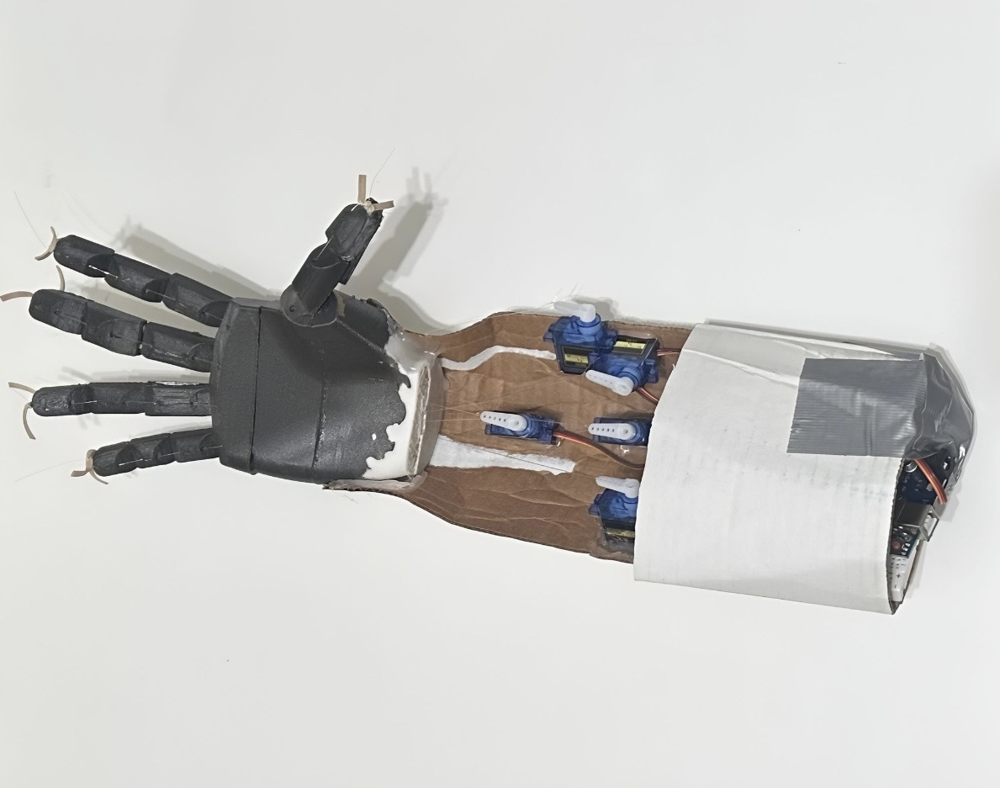

PERSONAL PROJECT
Finger-Controlled Prosthetic Hand
A 3D-printed prosthetic hand powered by five servo motors and controlled through camera-based finger tracking.

OVERVIEW
Controlling a Prosthetic Hand with Finger Movement
The goal of this project was to create a low-cost prosthetic hand that could reproduce finger movement using camera-based tracking and servo motor control.
The hand was 3D printed and powered by five servo motors, with each servo controlling movement within the prosthetic hand.
MY ROLE
Independent Design & Build
I designed, assembled, programmed, and tested the system as an independent project.
I integrated the 3D-printed hand, five servo motors, camera-based finger tracking, and Arduino control into one working system.
CONTROL SYSTEM
Finger Position → Servo Angle
The camera tracks the movement of my fingers using python code and converts that movement into a position value sending it to the arduino.
That position acts like a virtual potentiometer. As my finger position changes, the Arduino maps the input to a corresponding servo angle.
The five servo motors then move the prosthetic fingers to follow the motion of my hand.
Camera Tracking
The camera detects the movement and position of the user's fingers.
Position Mapping
Finger movement acts like a virtual potentiometer for the control system.
Arduino Control
Arduino programming maps the input position to servo angles.
Five Servos
Five servo motors actuate the prosthetic hand.
RESULT
Functional Prototype in One Week
The completed prototype demonstrated that camera-based finger tracking could be combined with Arduino control and servo actuation to reproduce finger movement in a 3D-printed prosthetic hand.
DEMONSTRATION
Finger-Controlled Prosthetic Hand in Operation
The demonstration shows the prosthetic hand responding as finger movement is tracked and translated into servo motion.